课程目标
目标1: 能够理解什么是Docker以及它的优势
目标2: 能够理解Docker镜像与容器的概念
目标3: 完成Docker安装与启动
目标4: 掌握Docker镜像与容器相关命令
目标5: 掌握Tomcat、Nginx 等软件的常用应用的安装
目标6: 掌握Docker迁移与备份相关命令
目标7: 能够运用Dockerfile编写创建镜像的脚本
目标8: 能够搭建与使用Docker私有仓库
01、虚拟化介绍
目标: 了解虚拟化及虚拟化种类。
1.1 什么是虚拟化
- 在计算机中，虚拟化（英语：Virtualization）是一种资源管理技术，是将计算机的各种实体资源，如服务器、网络、内存及存储等，予以抽象、转换后呈现出来，打破实体结构间的不可切割的障碍，使用户以更好的方式来应用这些资源。这些资源的新虚拟部分是不受现有资源的架设方式，地域或物理组态所限制。一般所指的虚拟化资源包括计算能力和资料存储。
- 在实际的生产环境中，虚拟化技术主要用来解决高性能的物理硬件产能过剩和老的旧的硬件产能过低的重组重用，透明化底层物理硬件，从而实现对资源的最大化利用
- 虚拟化技术种类很多， 例如：软件虚拟化、硬件虚拟化、内存虚拟化、网络虚拟化、桌面虚拟化等等。
1.2 虚拟化架构种类
全虚拟化架构
虚拟机的监视器（hypervisor）是类似于用户的应用程序运行在主机的OS之上，如VMware的workstation，这种虚拟化产品提供了虚拟的硬件)。
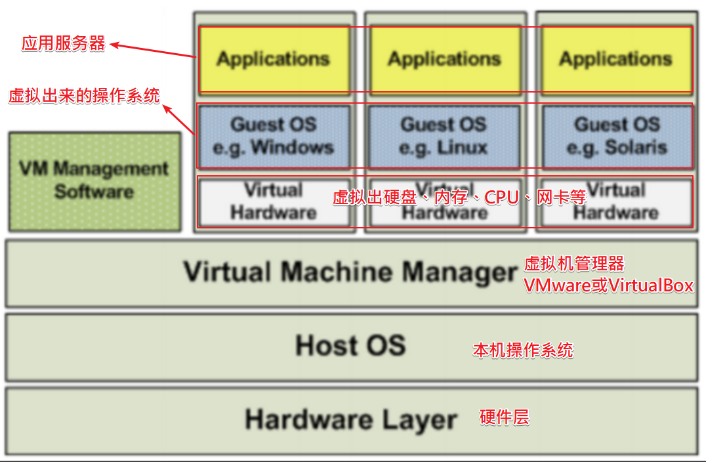
说明: 虚拟出来的操作系统可以与本机操作系统不一样(内核)。
OS层虚拟化架构
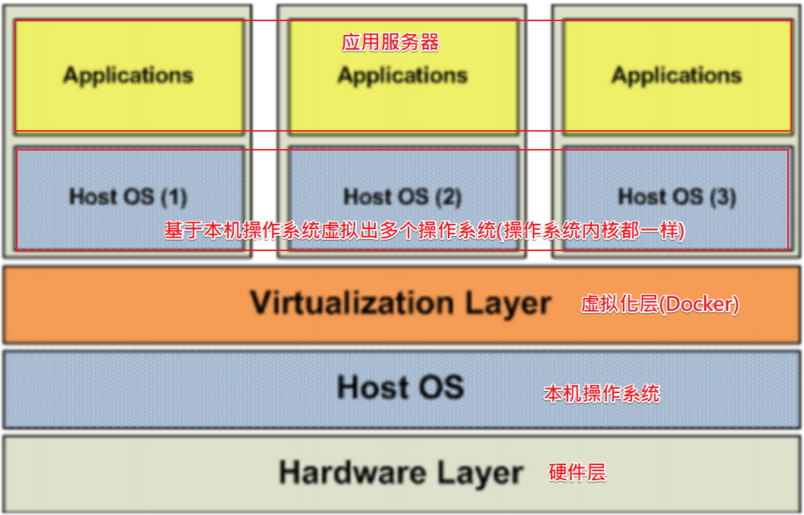
说明: 虚拟出来的操作系统与本机操作系统一样(内核)。
硬件层虚拟化架构
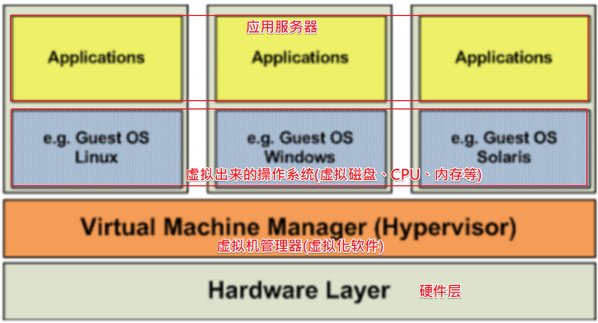
硬件层的虚拟化具有高性能和隔离性，因为Hypervisor直接在硬件上运行，有利于控制VM的OS访问硬件资源，使用这种解决方案的产品有VMware ESXi 和 Xen server
Hypervisor是一种运行在物理服务器和操作系统之间的中间软件层，可允许多个操作系统和应用共享一套基础物理硬件，因此也可以看作是虚拟环境中的“元”操作系统，它可以协调访问服务器上的所有物理设备和虚拟机，也叫虚拟机监视器（Virtual Machine Monitor，VMM）。
Hypervisor是所有虚拟化技术的核心。当服务器启动并执行Hypervisor时，它会给每一台虚拟机分配适量的内存、CPU、网络和磁盘，并加载所有虚拟机的客户操作系统。
说明: 虚拟出来的操作系统是没有宿主机操作系统。
小结
虚拟化:（英语: Virtualization）是一种资源管理技术，是将计算机的各种实体资源，如服务器、网络、内存及存储等，予以抽象、转换后呈现出来，打破实体结构间的不可切割的障碍，使用户可以比原本的组态更好的方式来应用这些资源。
虚拟化技术：软件虚拟化、硬件虚拟化、内存虚拟化、网络虚拟化(vip)、桌面虚拟化。
虚拟化架构：全虚拟化架构、OS层虚拟化架构、硬件层虚拟化架构
02、什么是docker
目标: 了解什么是docker?
2.1 docker简介
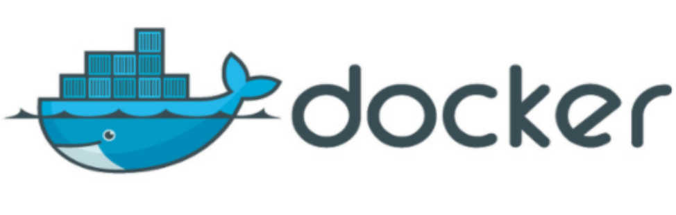
Docker 是一个开源的应用容器引擎，基于 Go 语言开发。Docker 可以让开发者打包他们的应用以及依赖包到一个轻量级、可移植的容器中，然后发布到任何流行的 Linux 机器上，也可以实现虚拟化。容器是完全使用沙箱机制，相互之间不会有任何接口（类似 iPhone 的 app）, 更重要的是容器性能开销极低。
Docker 应用场景
- 持续集成、打包、发布
2.1 docker好处
使用Docker可以实现开发人员的开发环境、测试人员的测试环境、运维人员的生产环境的一致性。
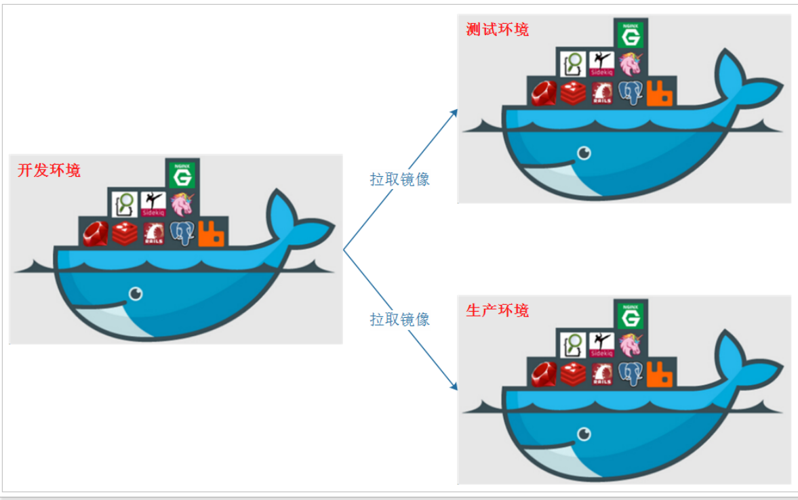
Docker借鉴了标准集装箱的概念。标准集装箱将货物运往世界各地，Docker将这个模型运用到自己的设计中，唯一不同的是：集装箱运输货物，而Docker运输软件。
小结
Docker是一个开源应用容器引擎,使用go语言开发，适用于企业应用部署解决方案。
03、容器&虚拟机对比
目标: 说出Docker容器与虚拟机相比的优势。
3.1 本质上的区别
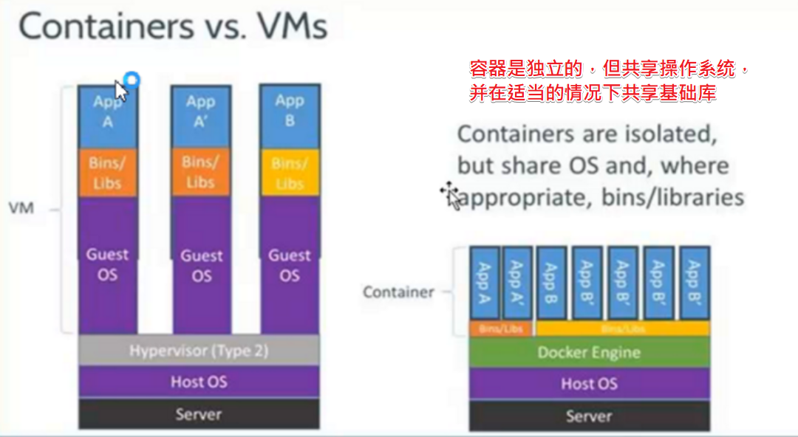
- VMs虚拟服务:
- Server基础设施服务，它可以是你的个人电脑，数据中心的服务器或者云主机。
- Host OS当前的操作系统，比如windows和linux系统等。
- hypervisor: 虚拟机监视器是一种虚拟化技术。可以在主操作系统之上运行多个不同的操作系统。比如vmware和virtualbox等。
- Guest OS就是虚拟子系统也就是我们的centos。
- Bins、Libs安装应用需要依赖的组件和环境。比如gcc、gcc++或者yum等。
- App 安装我们对应的应用，比如: mysql、tomcat、jdk等。应用安装之后，就可以在各个操作系统分别运行应用了，这样各个应用就是相互隔离的。
- Docker容器：
- Server基础设施服务，它可以是你的个人电脑，数据中心的服务器或者云主机。
- Host OS当前的操作系统，比如windows和linux系统等。
- Docker Engine: 负责和底层的系统进行交互和共享底层系统的资源。取代了Hypevisor，它是运行在操作系统之上的后台进程，负责管理Docker容器。
- 各种依赖，对于Docker，应用的所有依赖都打包在Docker镜像中，Docker容器是基于Docker镜像创建的。
- App应用，应用的源代码与他的依赖都打包在Docker镜像中，不同的应用需要不同的Docker镜像，不同的应用运行在不同的Docker容器中，它们是相互隔离的。
3.2 使用上的区别
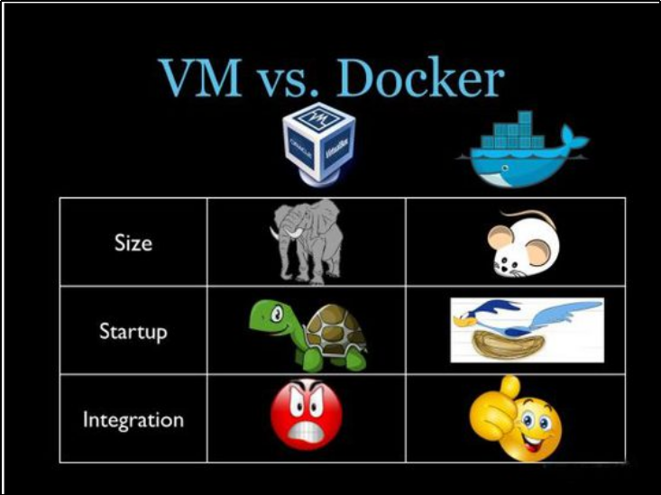
| 虚拟机 | 容器 | |
|---|---|---|
| 占用磁盘空间 | 非常大，GB级 | 小，MB甚至KB级 |
| 启动速度 | 慢，分钟级 | 快，秒级 |
| 运行形态 | 运行于Hypervisor上 | 直接运行在宿主机内核上 |
| 并发性 | 一台宿主机上十几个，最多几十个 | 上百个，甚至数百上千个 |
| 性能 | 逊于宿主机 | 接近宿主机本地进程 |
| 资源利用率 | 低 | 高 |
小结
Docker容器是在操作系统层面上实现虚拟化，直接复用本地主机的操作系统，而传统虚拟机则是在硬件层面实现虚拟化。与传统的虚拟机相比，Docker优势体现为启动速度快、占用体积小。
04、Docker：组成结构
目标: 了解Docker的组成结构
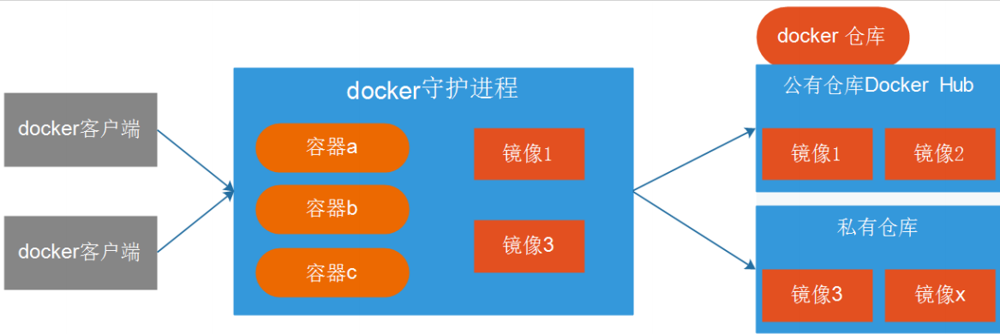
| 名称 | 说明 |
|---|---|
| Docker 镜像 (Images) | Docker 镜像是用于创建 Docker 容器的模板。镜像是基于联合文件系统的一种层式结构， 由一系列指令一步一步构建出来(只读不能修改)。 |
| Docker 容器 (Container) | 容器是独立运行的一个或一组应用。镜像相当于类，容器相当于类的对象，相当于操作系统 |
| Docker 客户端(Client) | Docker 客户端通过命令行或者其他工具使用 Docker API 与 Docker 的守护进程通信。 |
| Docker 主机(Host) | 一个物理或者虚拟的机器用于执行 Docker 守护进程和容器。 |
| Docker守护进程 | 是Docker服务器端进程，负责支撑Docker 容器的运行以及镜像的管理。 |
| Docker 仓库 DockerHub(Registry) | Docker 仓库用来保存镜像，可以理解为代码控制中的代码仓库。 Docker Hub提供了庞大 的镜像集合供使用。用户也可以将自己本地的镜像推送到Docker仓库供其他人下载。 |
什么是仓库？
Docker用Registry来保存用户构建的镜像。Registry分为公共和私有两种。Docker公司运营公共的Registry叫做Docker Hub。用户可以在Docker Hub注册账号，分享并保存自己的镜像（说明：在Docker Hub下载镜像巨慢，可以自己构建私有的Registry）。
官方仓库: https://hub.docker.com/
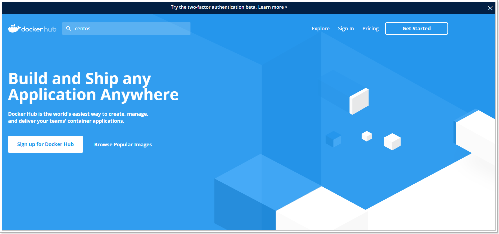
小结
Docker组成部分: 镜像、容器、客户端、主机、守护进程、仓库。
05、Docker：安装
目标: 掌握Docker的安装
Docker可以运行在MAC、Windows、CentOS、DEBIAN（大便）、UBUNTU等操作系统上，提供社区版和企业版，本课程基于CentOS安装Docker。
注意：这里建议安装在CentOS7.x以上的版本，在CentOS6.x的版本中，安装前需要安装其他很多的环境而且Docker很多补丁不支持更新。root itcast123
资料中已经准备了安装好的镜像，直接挂载即可，挂载后，使用ifconfig命令查看本地ip: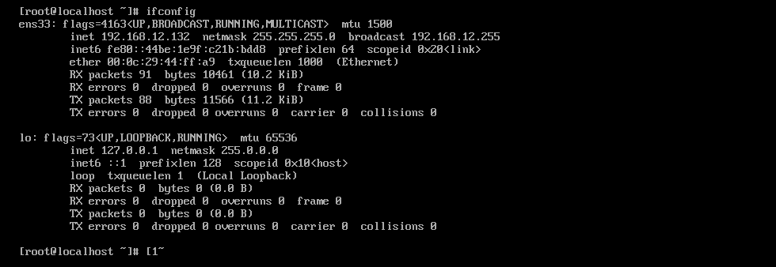
以下是在CentOS7中安装Docker的步骤:
# 1. yum 更新已有rpm包，升级linux内核(不做也可以) yum update # 2. 安装需要的软件包，yum-util提供yum-config-manager功能，另外两个是devicemapper驱动依赖 yum install -y yum-utils device-mapper-persistent-data lvm2 # 3. 设置yum源为阿里云 yum-config-manager --add-repo http://mirrors.aliyun.com/docker-ce/linux/centos/docker-ce.repo # 4. 安装docker【docker-ce: 社区版，免费；docker-ee：企业版，收费】 yum install docker-ce -y # 5. 安装后查看docker版本 docker -v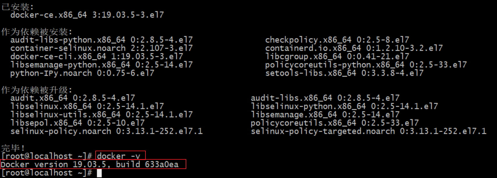
06、Docker：设置ustc镜像源
目标: 掌握镜像源的设置
ustc是老牌的linux镜像服务提供者了，还在遥远的ubuntu 5.0.4版本的时候就在用。ustc的docker镜像加速器速度很快。ustc docker mirror的优势之一就是不需要注册，是真正的公共服务。
访问地址: https://lug.ustc.edu.cn/wiki/mirrors/help/docker
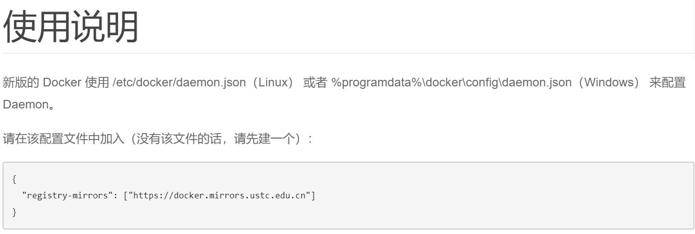
操作步骤
编辑文件/etc/docker/daemon.json
# 执行如下命令 mkdir /etc/docker vi /etc/docker/daemon.json在文件中加入下面内容:
{ "registry-mirrors": ["https://docker.mirrors.ustc.edu.cn"] }
07、Docker：服务相关命令
目标: 掌握docker服务相关命令
常用命令:
# 启动docker服务
systemctl start docker
# 停止docker服务
systemctl stop docker
# 重启docker服务
systemctl restart docker
# 查看docker服务状态
systemctl status docker
# 设置开机启动docker服务
systemctl enable docker
# 设置开机不启动
systemctl disable docker
# 查看docker概要信息
docker info
# 查看docker帮助文档
docker --help注意: systemctl命令是系统服务管理器指令。
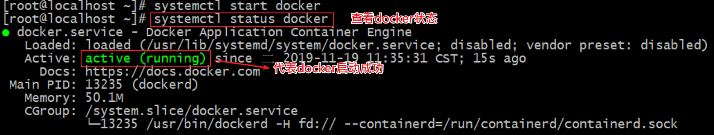
08、Docker：镜像相关命令
目标: 掌握操作镜像的常用命令
8.1 镜像介绍
Docker镜像是由文件系统叠加而成（是一种文件的存储形式）；是docker中的核心概念，可以认为镜像就是对某些运行环境或者软件打的包，用户可以从docker仓库中下载基础镜像到本地，比如开发人员可以从docker仓库拉取（下载）一个只包含centos7系统的基础镜像，把基础镜像运行成为一个容器（容器相当于操作系统），然后在这个容器中安装jdk、mysql、Tomcat和自己开发的应用，最后将容器打成一个新的镜像。开发人员将这个新的镜像提交给测试人员进行测试，测试人员只需要在测试环境下运行这个镜像成一个容器就可以了，这样就可以保证开发人员的环境和测试人员的环境完全一致。
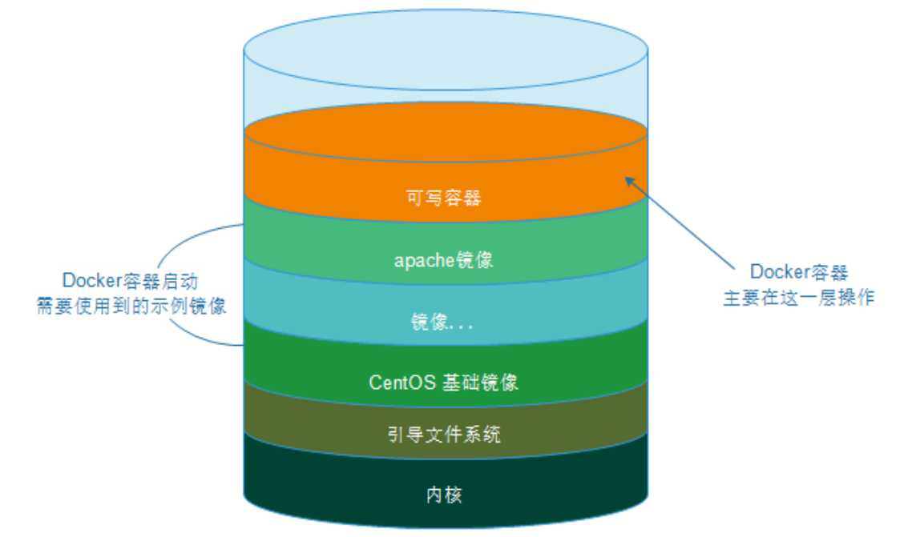
8.2 查看镜像
# 查看镜像可以使用如下命令:
docker images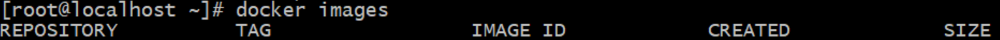
- REPOSITORY: 镜像名称
- TAG: 镜像标签 (默认是可以省略的,也就是latest)
- IMAGE ID: 镜像ID
- CREATED: 镜像的创建日期（不是获取该镜像的日期）
- SIZE: 镜像大小
说明: 这些镜像都是存储在docker宿主机的/var/lib/docker目录下。
8.3 搜索镜像
# 如果你需要从网络中查找需要的镜像，可以通过以下命令搜索
docker search 镜像名称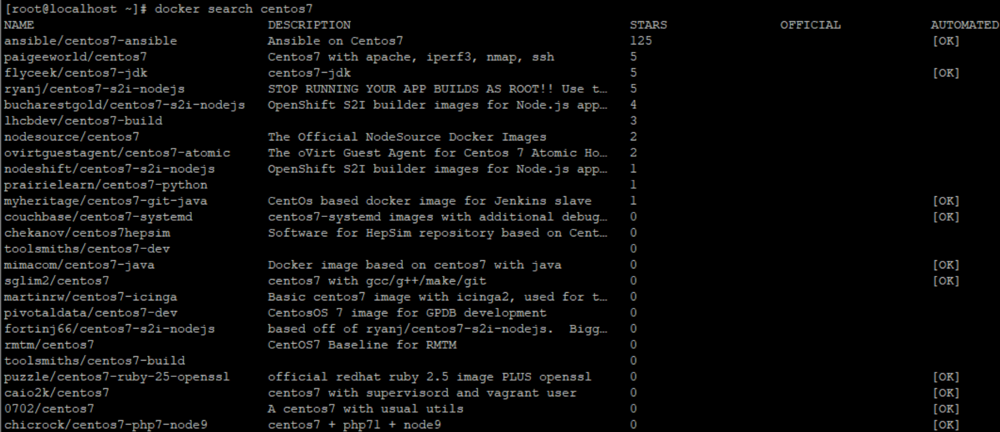
- NAME: 镜像名称
- DESCRIPTION: 镜像描述
- STARS: 用户评价，反应一个镜像的受欢迎程度
- OFFICIAL: 是否官方
- AUTOMATED: 自动构建，表示该镜像由Docker Hub自动构建流程创建的
大家也可以去官方搜索(http://hub.docker.com):
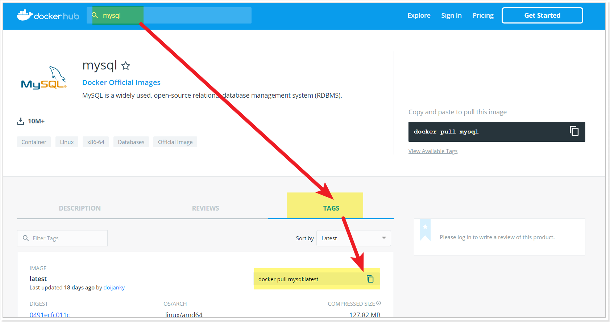
8.4 拉取镜像
# 拉取镜像就是从Docker仓库下载镜像到本地，镜像名称格式为 名称:版本号，如果版本号不指定则是最新的版本 命令如下:
docker pull 镜像名称
# 拉取centos 7
docker pull centos:7
# 拉取centos 最后版本镜像
docker pull centos:latest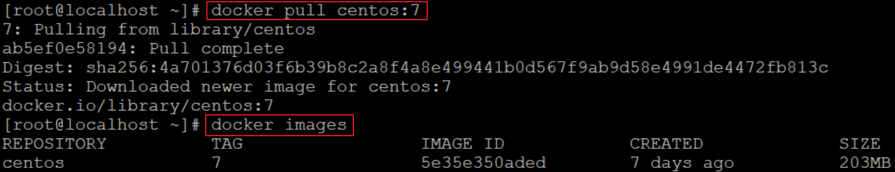
8.5 删除镜像
# 按照镜像id删除镜像，或者镜像名称:版本号
docker rmi 镜像ID
# 删除所有镜像(谨慎操作)
docker rmi `docker images -q`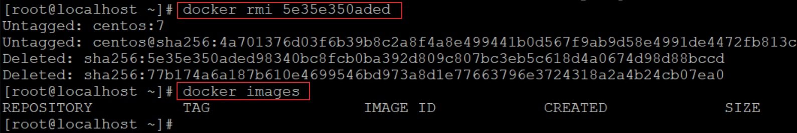
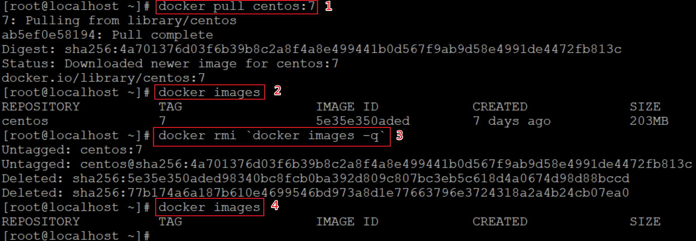
9、Docker：容器相关命令
目标: 掌握操作容器相关的命令
9.1 查看容器
查看正在运行容器: docker ps
查看所有容器: docker ps -a
查看最后一次运行的容器: docker ps –l
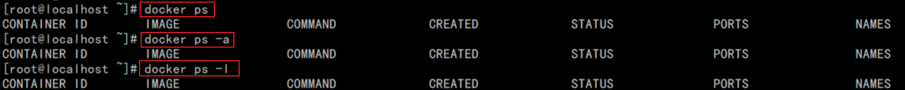
9.2 创建与运行容器
可以基于已有的镜像来创建容器，创建与运行容器使用命令: docker run
参数说明:
-i: 表示运行容器
-t: 表示容器启动后会进入其命令行。加入这两个参数后，容器创建就能登录进去。即分配一个伪终端/bin/bash。
--name: 为创建的容器命名（容器名称必须唯一）。
-v: 表示目录映射关系（前者是宿主机目录，后者是容器的目录），可以使用多个－v做多个目录或文件映射。注意：最好做目录映射，在宿主机上做修改，然后共享到容器上。
-d: 在run后面加上-d参数, 则会创建一个守护式容器在后台运行（这样创建容器后不会自动登录容器，如果只加-i -t两个参数，并指定终端，创建后就会自动进去容器）。
-p: 表示端口映射，前者是宿主机端口，后者是容器内的映射端口。可以使用多个-p做多个端口映射。9.2.1 交互式容器
以交互式方式创建并运行容器，启动完成后，直接进入当前容器。使用exit命令退出容器。需要注意的是以此种方式创建并启动容器，如果（第一次）退出容器，则容器会进入停止状态。
# 先拉取一个镜像；这一步不是每次启动容器都要做的，而是因为前面我们删除了镜像， # 无镜像可用所以才再拉取一个 docker pull centos:7 # 创建并启动名称为 mycentos7 的交互式容器 # 容器名称 mycentos7 # 镜像名称:TAG (centos:7) 也可以使用镜像id (5e35e350aded) # /bin/bash: 进入容器命令行 # 如果镜像名称后面没有加版本号，它会先去远程仓库下载最新的版本 docker run -it --name=mycentos7 centos:7 /bin/bash ##### 9.2.2 守互式容器 + 创建一个守护式容器；如果对于一个需要长期运行的容器来说，我们可以创建一个守护式容器。命令如下（容器名称不能重复）。 ```shell # 创建并启动守护式容器 # 容器名称: mycentos2 # 镜像名称:TAG (centos:7) 也可以使用镜像id (5e35e350aded) docker run -di --name=mycentos2 centos:7 # 进入容器： # docker exec -it container_name (或者 container_id) /bin/bash # exit退出时，容器不会停止 docker exec -it mycentos2 /bin/bash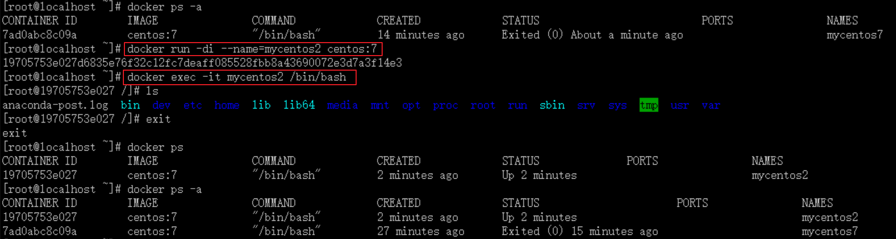
说明: 守护式容器是一直运行的，退出只是退出终端，它还是在后台运行。
9.3 停止或启动容器
# 停止正在运行的容器: docker stop 容器名称|容器ID
docker stop mycentos2
# 启动已运行过的容器: docker start 容器名称|容器ID
docker start mycentos2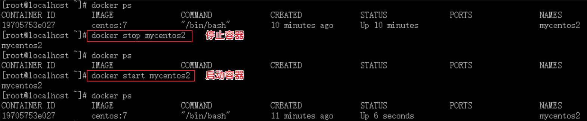
9.4 重启容器
# 重启正在运行的容器: docker restart 容器名称|容器ID
docker restart mycentos2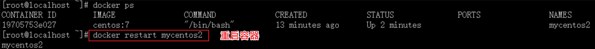
9.5 查看容器信息（包括ip）
我们可以通过以下命令查看容器运行的各种数据:
# 在linux宿主机下查看 mycentos2 的ip
# docker inspect 容器名称（容器ID）
docker inspect mycentos2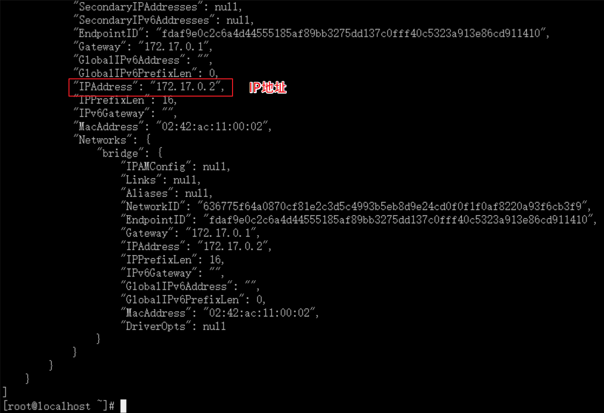
容器之间在一个局域网内，linux宿主机器可以与容器进行通信；但是外部的物理机笔记本是不能与容器直接通信的，如果需要则需要通过宿主机器端口的代理。
9.6 删除容器
- 删除指定的容器: docker rm 容器名称|容器ID
- 删除所有容器: docker rm `docker ps -a -q`
docker rm mycentos2
# 或者
docker rm 2095a22bee70
# 删除所有容器
docker rm `docker ps -a -q`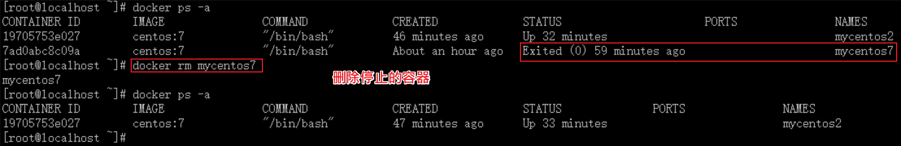
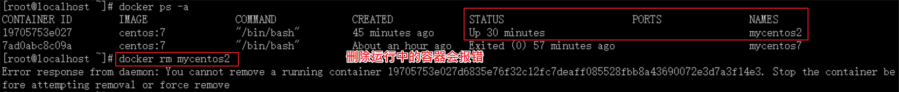
说明: 如果容器是运行状态则删除失败，需要停止容器才能删除
注意: 只能删除停止的容器
10、Docker：容器文件拷贝
目标: 掌握文件拷贝命令
将linux宿主机中的文件拷贝到容器内可以使用命令:
# docker cp 需要拷贝的文件或目录 容器名称:容器目录 # 创建一个文件abc.txt touch abc.txt # 复制 abc.txt 到 mycentos2 的容器的 / 目录下 docker cp abc.txt mycentos2:/ # 进入mycentos2容器 docker exec -it mycentos2 /bin/bash # 查看容器 / 目录下文件 ll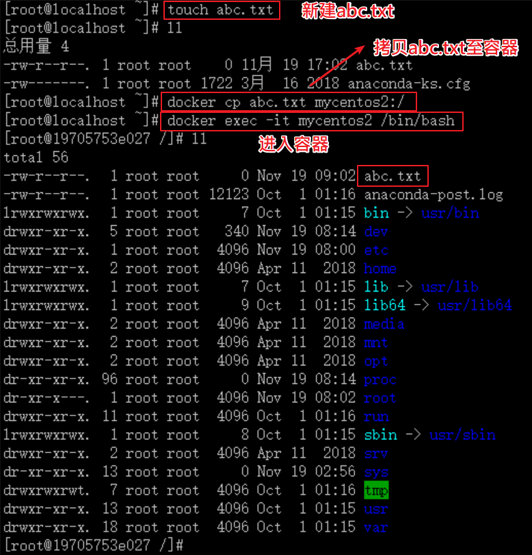
将文件从容器内拷贝出来到linux宿主机使用命令:
# docker cp 容器名称:容器目录 需要拷贝的文件或目录 # 进入容器后创建文件aaa.txt touch aaa.txt # 退出容器 exit # 在Linux宿主机器执行复制；将容器mycentos2的/aaa.txt文件复制到 宿主机器的/root目录下 docker cp mycentos2:/aaa.txt /root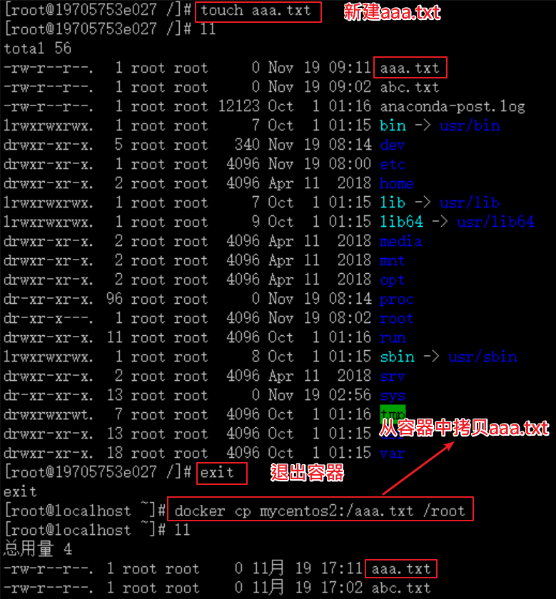
注意: 停止状态的容器也是可以进行文件拷贝的，可以拷进去，也可以拷出来。
11、Docker：容器目录挂载
目标: 掌握目录挂载命令(其实就是目录映射)
可以在创建容器的时候，将宿主机的目录与容器内的目录进行映射，这样我们就可以通过修改宿主机某个目录的文件从而去影响容器。
创建容器时添加-v参数，后边为宿主机目录:容器目录，例如： docker run -di -v /usr/local/test:/usr/local/test –name=mycentos3 centos:7
# 创建linux宿主机器要挂载的目录 mkdir /usr/local/test # 创建并启动容器mycentos3 # 并挂载 linux中的/usr/local/test目录到容器的/usr/local/test # 也就是在 linux中的/usr/local/test中操作相当于对容器相应目录操作 docker run -di -v /usr/local/test:/usr/local/test --name=mycentos3 centos:7 # 在linux宿主机下创建文件 touch /usr/local/test/bbb.txt # 进入容器 docker exec -it mycentos3 /bin/bash # 在容器中查看目录中是否有对应文件bbb.txt cd /usr/local/test ll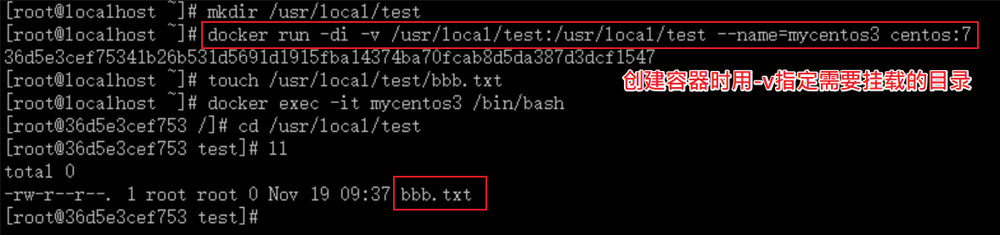
注意: 如果你共享的是多级的目录，可能会出现权限不足的提示。 这是因为CentOS7中的安全模块selinux把权限禁掉了，需要添加参数 –privileged=true 来解决挂载的目录没有权限的问题。
12、Docker：安装mysql容器
目标: 掌握在docker中安装mysql容器
操作步骤
第一步：拉取镜像
# 拉取MySQL 5.7镜像 docker pull centos/mysql-57-centos7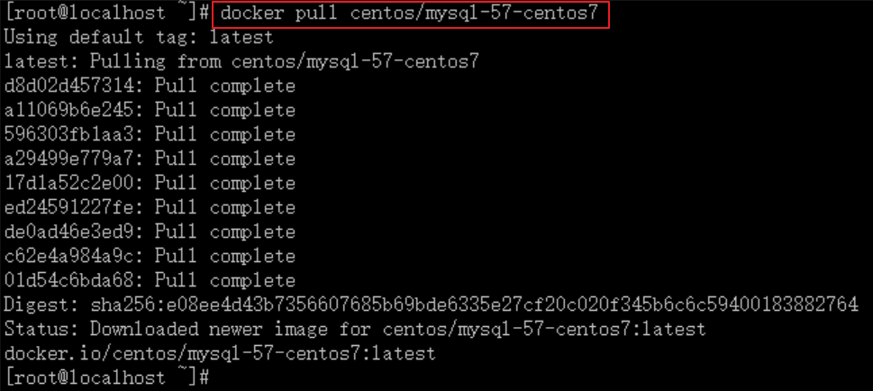
第二步：创建容器
docker run -di –name=mysql5.7 -p 3306:3306 -e MYSQL_ROOT_PASSWORD=root centos/mysql-57-centos7
- -p 代表端口映射，格式为 宿主机映射端口:容器运行端口
- -e 代表添加环境变量 MYSQL_ROOT_PASSWORD 是root用户的远程登陆密码（如果是在容器中使用root登录的话,那么其密码为空）
# 创建mysql5.7容器 docker run -di --name=mysql5.7 -p 3306:3306 -e MYSQL_ROOT_PASSWORD=root centos/mysql-57-centos7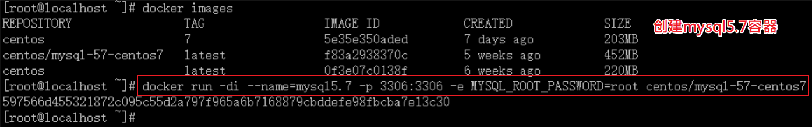
第三步：操作容器mysql
# 进入mysql5.7容器 docker exec -it mysql5.7 /bin/bash # 登录容器里面的mysql mysql -u root -p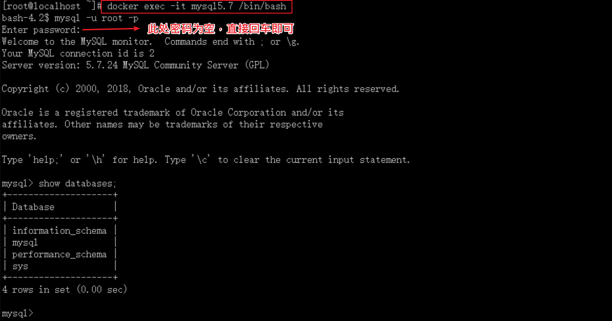
第四步：远程登录mysql，使用SQLyou在windows中进行远程登录在docker容器中的mysql。
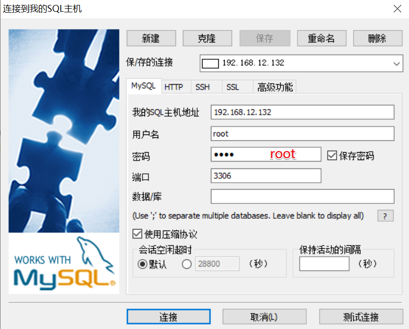
14、Docker：安装tomcat容器
目标: 掌握在docker中安装tomcat容器
操作步骤
第一步：拉取镜像
# 拉取tomcat镜像 docker pull tomcat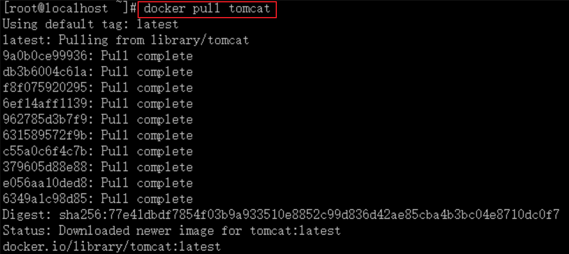
第二步：创建容器
# 创建tomcat容器;并挂载了webapps目录 docker run -di --name=mytomcat -p 9000:8080 -v /usr/local/tomcat/webapps:/usr/local/tomcat/webapps tomcat # 查看日志 docker logs -f mytomcat # 如果出现 WARNING: IPv4 forwarding is disabled. Networking will not work. # 执行如下操作 # 1、编辑 sysctl.conf vi /etc/sysctl.conf # 2、在上述打开的文件中后面添加 net.ipv4.ip_forward=1 # 3、重启network systemctl restart network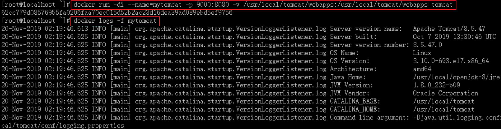
测试访问宿主机的端口号为9000的 tomcat。地址：http://宿主机ip:9000，也可以往/user/local/tomcat/webapps下部署应用，然后再访问。
第三步：部署web应用
创建springboot_db数据库,再创建tb_user表
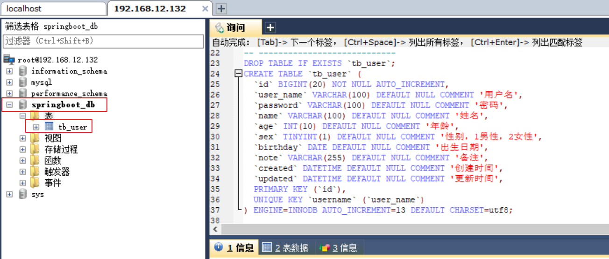
查看mysql5.7容器的ip地址(docker inspect mysql5.7)
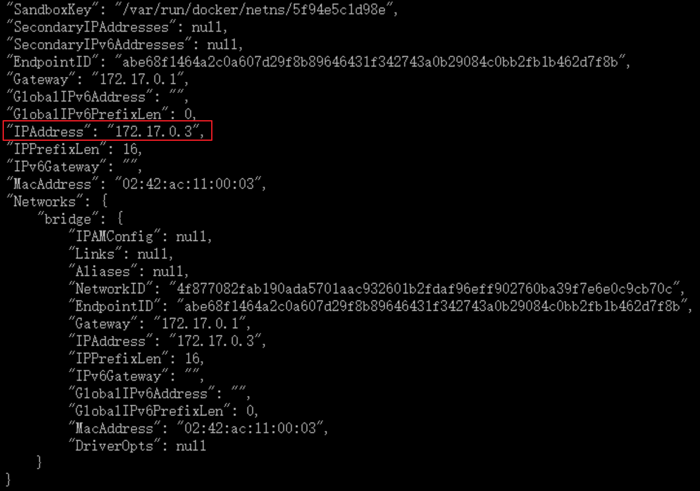
修改springboot-high工程的application.yml（数据库连接池信息），使用宿主机的ip和端口也可以，如果使用的是容器的ip和端口，前提是两个容器必须在同一个宿主机下。
spring: datasource: driver-class-name: com.mysql.jdbc.Driver url: jdbc:mysql://172.17.0.4:3306/springboot_db # 使用容器的ip端口或宿主机的ip端口 username: root password: root修改springboot-high工程的pom文件
<!--第一步，指定打war包--> <packaging>war</packaging> <!--第二步，打包排除内嵌tomcat--> <dependency> <groupId>org.springframework.boot</groupId> <artifactId>spring-boot-starter-tomcat</artifactId> <scope>provided</scope> </dependency> <!--第三步，指定springboot项目打包插件--> <build> <finalName>ROOT</finalName> <plugins> <plugin> <groupId>org.springframework.boot</groupId> <artifactId>spring-boot-maven-plugin</artifactId> </plugin> </plugins> </build>编写WebServletInitializer类，作用等价于web.xml
package cn.itcast.configuration; import cn.itcast.HighApplication; import org.springframework.boot.builder.SpringApplicationBuilder; import org.springframework.boot.web.servlet.support.SpringBootServletInitializer; /** * 作用等价于web.xml * * @Author LK * @Date 2020/11/7 */ public class WebServletInitializer extends SpringBootServletInitializer { @Override protected SpringApplicationBuilder configure(SpringApplicationBuilder builder) { builder.sources(HighApplication.class); return builder; } }进入项目pom文件命令行下，执行打包命令: mvn package -Dmaven.test.skip=true
上传ROOT.war到/usr/local/tomcat/webapps/目录下。
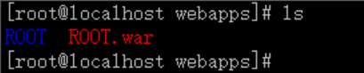
第四步：浏览器访问 (http://192.168.253.128:9000/findAll)
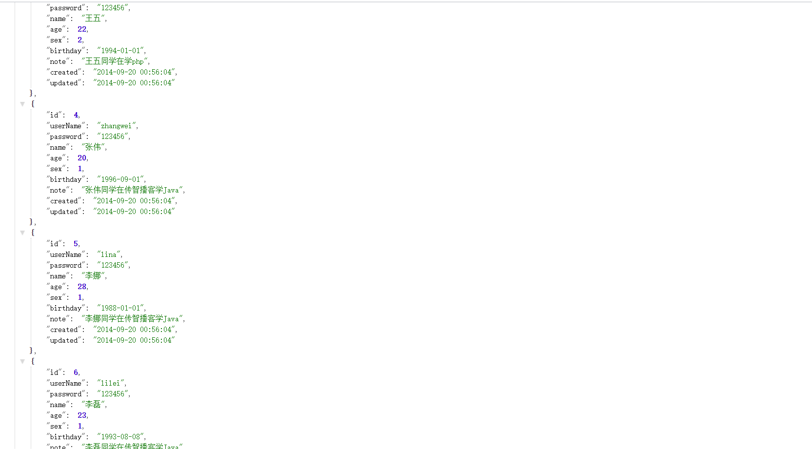
15、Docker：安装Nginx容器
目标: 掌握在docker中安装nginx容器
操作步骤
第一步：拉取镜像
# 拉取nginx镜像 docker pull nginx第二步：创建容器
# 创建nginx容器 docker run -di --name=mynginx -p 80:80 nginx # 查看日志 docker logs -f mynginx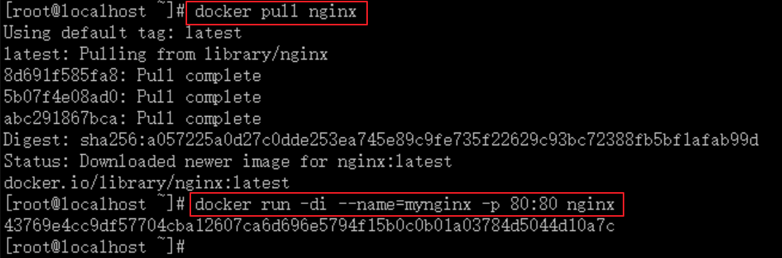
第三步：测试访问(启动后再宿主机上访问: http://宿主机IP/)
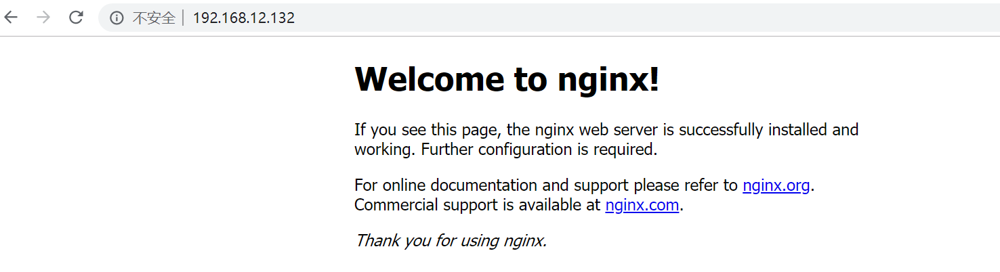
第四步：配置反向代理，官方的nginx镜像，配置文件nginx.conf 在/etc/nginx/目录下。
从mynginx容器拷贝配置文件到宿主机
docker cp mynginx:/etc/nginx/nginx.conf nginx.conf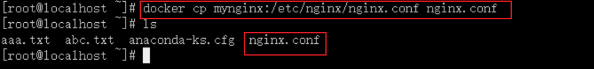
查看mytomcat容器的ip地址
docker inspect mytomcat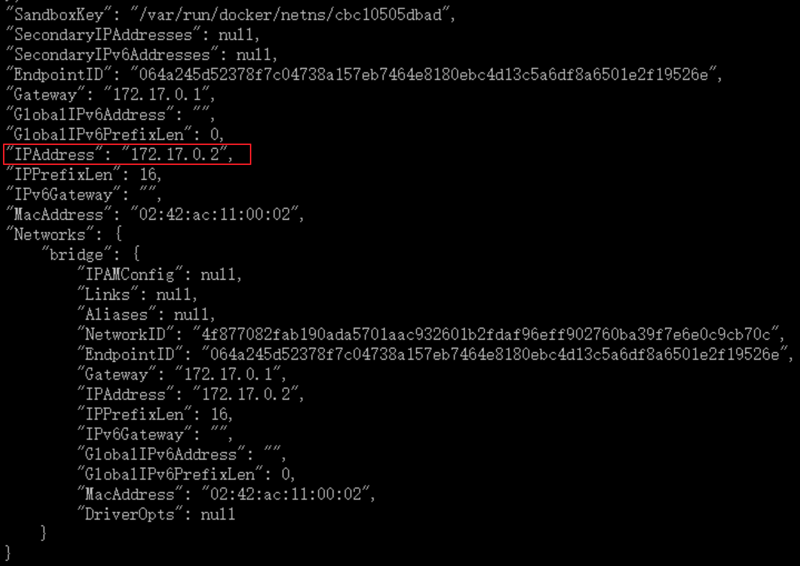
配置nginx.conf
server { listen 80; server_name 127.0.0.1; location / { proxy_pass http://172.17.0.2:8080; } }将修改后的配置文件拷贝到容器中
docker cp nginx.conf mynginx:/etc/nginx/nginx.conf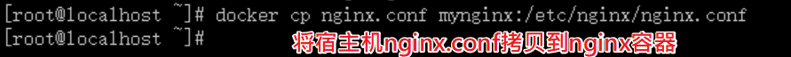
重新启动容器
docker restart mynginx
第五步：访问(http://192.168.253.128/findAll)
16、Docker：安装Redis容器
目标: 掌握在docker中安装redis容器
操作步骤
第一步：拉取镜像
# 拉取redis镜像 docker pull redis第二步：创建容器
# 创建redis容器 docker run -di --name=myredis -p 6379:6379 redis # 查看redis日志 docker logs -f myredis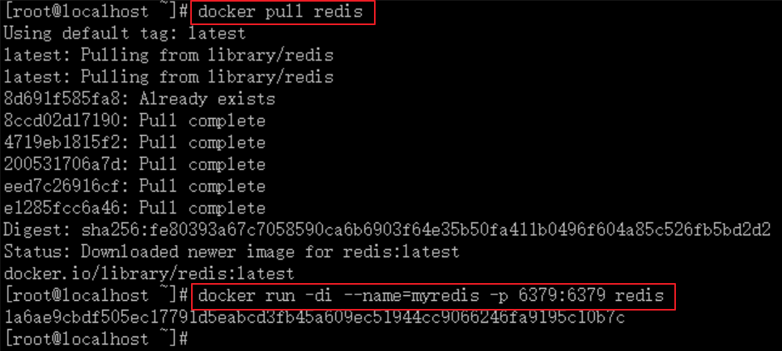
第三步：操作redis容器
# 进入redis容器 docker exec -it myredis /bin/bash # 进入redis安装目录 cd /usr/local/bin # 连接redis ./redis-cli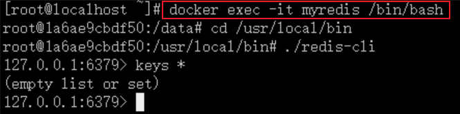
第四步：外部代码使用redis。
spring: datasource: driver-class-name: com.mysql.jdbc.Driver url: jdbc:mysql://172.17.0.4:3306/springboot_db username: root password: root redis: host: 192.168.253.128 # 开发环境使用宿主机ip端口，若是部署到同一台宿主机下，可使用容器的ip端口 port: 6379
17、Docker：安装Rabbitmq容器
目标: 掌握在docker中安装rabbitmq容器
操作步骤
第一步：拉取镜像
# 拉取rabbitmq镜像 docker pull rabbitmq:management第二步：创建容器
# 创建Rabbitmq容器 # 创建容器，rabbitmq需要有映射以下端口: # 15672: web管理的端口 # 5672：(客户端连接端口) docker run -di --name=myrabbitmq -p 5672:5672 -p 15672:15672 rabbitmq:management # 查看日志 docker logs -f myrabbit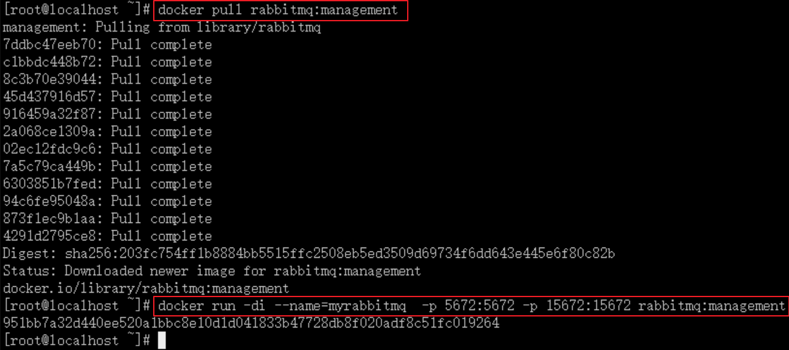
第三步：访问rabbit控制台: http://192.168.253.128:15672
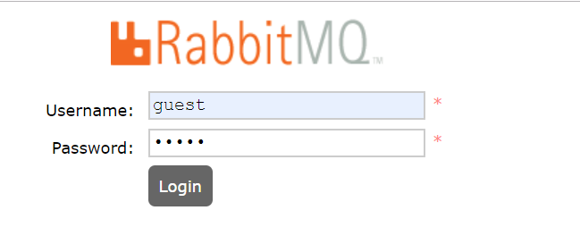
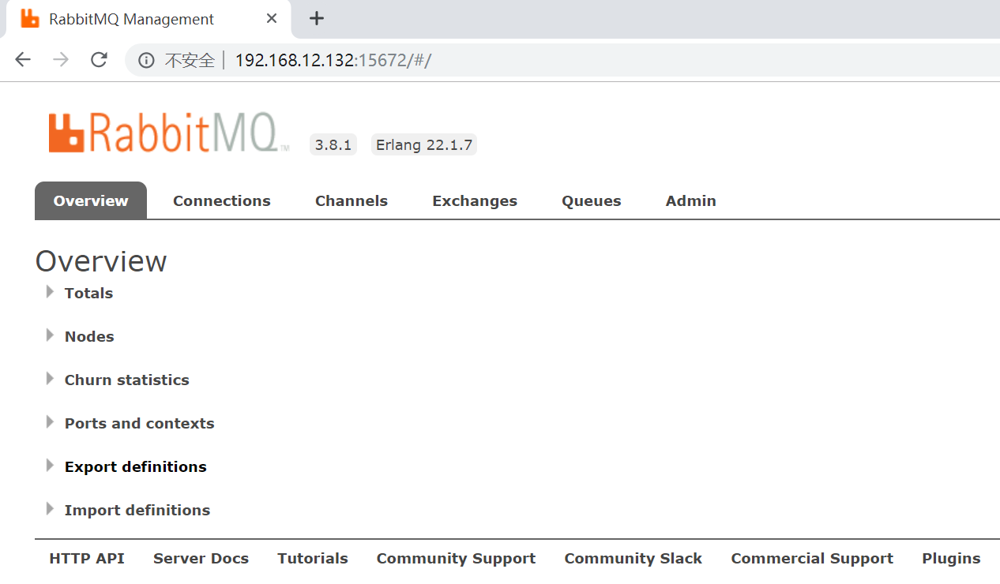
18、Docker：容器备份与迁移
目标: 掌握docker中容器的备份与迁移
主要作用: 就是让配置好的容器，可以得到复用，后面用到得的时候就不需要重新配置。
其中涉及到的命令有:
- docker commit 将容器保存为镜像
- docker save -o 将镜像备份为tar文件
- docker load -i 根据tar文件恢复为镜像
操作步骤
容器保存为镜像 (使用docker commit命令可以将容器保存为镜像)。
命令格式: docker commit 容器名称 新的镜像名称
# 将容器保存为镜像 # mynginx：容器名称、mynginx：新的镜像名称 docker commit mynginx mynginx说明: 此镜像的内容就是当前容器的内容，接下来你可以用此镜像再次运行新的容器.
镜像备份 (使用docker save命令可以将已有镜像保存为tar文件)
命令格式: docker save –o tar文件名 镜像名
# 保存镜像为文件 docker save -o mynginx.tar mynginx镜像恢复与迁移 (使用docker load命令可以根据tar文件恢复为docker镜像)
命令格式: docker load -i tar文件名
# 停止mynginx容器 docker stop mynginx # 删除mynginx容器 docker rm mynginx # 删除mynginx镜像 docker rmi mynginx # 加载恢复mynginx镜像 docker load -i mynginx.tar # 在镜像恢复之后，基于该镜像再次创建启动容器 docker run -di --name=mynginx -p 80:80 mynginx
总结
- 容器保存镜像: docker commit 容器名称 新的镜像的名称
- 导出镜像: docker save -o 镜像名称.tar 新的镜像的名称
- 导入镜像: docker load -i 镜像名称.tar
19、Docker：Dockerfile构建镜像（了解）
目标: 掌握Dockerfile构建镜像
19.1 Dockerfile文件
- 前面的课程中已经知道了，要获得镜像，可以从Docker仓库中进行下载。那如果我们想自己开发一个镜像，那该如何做呢？答案是: Dockerfile
- Dockerfile其实就是一个文本文件，由一系列命令和参数构成，Docker可以读取Dockerfile文件并根据Dockerfile文件的描述来构建镜像。
- Dockerfile文件内容一般分为4部分
- 基础镜像信息
- 维护者信息
- 镜像操作指令
- 容器启动时执行的指令
19.2 常用命令
| 命令 | 作用 |
|---|---|
| FROM image_name:tag | 定义了使用哪个基础镜像启动构建流程 |
| MAINTAINER user_name | 声明镜像的创建者 |
| ENV key value | 设置环境变量 (可以写多条) |
| RUN command | 是Dockerfile的核心部分(可以写多条) |
| ADD source_dir/file dest_dir/file | 将宿主机的文件复制到镜像创建的容器内，如果是一个压缩文件，将会在复制后自动解压 |
| COPY source_dir/file dest_dir/file | 和ADD相似，但是如果有压缩文件并不能解压 |
| WORKDIR path_dir | 设置工作目录 |
19.3 构建镜像
# 1、创建目录
mkdir -p /usr/local/dockerjdk8
cd /usr/local/dockerjdk8
# 2、下载jdk-8u171-linux-x64.tar.gz并上传到服务器（虚拟机）中的/usr/local/dockerjdk8目录
# 3、在/usr/local/dockerjdk8目录下创建Dockerfile文件，文件内容如下:
vi Dockerfile
FROM centos:7
MAINTAINER ITCAST
WORKDIR /usr
RUN mkdir /usr/local/java
ADD jdk-8u171-linux-x64.tar.gz /usr/local/java/
ENV JAVA_HOME /usr/local/java/jdk1.8.0_171
ENV JRE_HOME $JAVA_HOME/jre
ENV CLASSPATH $JAVA_HOME/lib/dt.jar:$JAVA_HOME/lib/tools.jar:$JRE_HOME/lib:$CLASSPATH
ENV PATH $JAVA_HOME/bin:$PATH
# 4、执行命令构建镜像；不要忘了后面的那个 . （点代表当前目录）
# -t 指定镜像名称
docker build -t='jdk1.8' .
# 5、查看镜像是否建立完成
docker images/usr/local/dockerjdk8/Dockerfile 文件中的内容:
说明: 创建文件Dockerfile 这里的D必须大写，不能有任何的偏差。
19.4 镜像创建容器
基于刚刚创建的镜像 jdk1.8 创建并启动容器进行测试
# 创建并启动容器
docker run -it --name=testjdk jdk1.8 /bin/bash
# 在容器中测试jdk是否已经安装
java -version
20、Docker：registry私服仓库
目标: 掌握docker私服仓库搭建
20.1 私有仓库搭建与配置
Docker官方的Docker hub（https://hub.docker.com）是一个用于管理公共镜像的仓库，我们可以从上面拉取镜像到本地，也可以把我们自己的镜像推送上去。但是，有时候我们的服务器无法访问互联网，或者你不希望将自己的镜像放到公网当中，那么我们就需要搭建自己的私有仓库来存储和管理自己的镜像。
私有仓库搭建步骤:
# 1、拉取私有仓库镜像
docker pull registry
# 2、启动私有仓库容器
docker run -di --name=registry -p 5000:5000 registry
# 3、打开浏览器 输入地址http://宿主机ip:5000/v2/_catalog，看到{"repositories":[]} 表示私有仓库 搭建成功
# 4、假设现在是另一台服务器，修改daemon.json
vi /etc/docker/daemon.json
# 在上述文件中添加一个key，保存退出。此步用于让 docker 信任私有仓库地址；注意将宿主机ip修改为自己宿主 机真实ip
{"insecure-registries":["宿主机ip:5000"]}
# 5、重启docker 服务
systemctl restart docker
# 因为现在只有一台服务器，我们重启了docker把registry容器也停掉了，因此我们启动下registry容器
docker start registry访问: http://192.168.253.128:5000/v2/_catalog
20.2 将镜像上传至私有仓库
# 1、标记镜像为私有仓库的镜像
# 语法: docker tag jdk1.8 宿主机IP:5000/jdk1.8
docker tag jdk1.8 192.168.253.128:5000/jdk1.8
# 2、上传标记的镜像到私有仓库
# 语法: docker push 宿主机IP:5000/jdk1.8
docker push 192.168.253.128:5000/jdk1.8
# 3、输入网址查看仓库效果
20.3 从私有仓库拉取镜像
若是在私有仓库所在的服务器上去拉取镜像；那么直接执行如下命令:
# 因为私有仓库所在的服务器上已经存在相关镜像；所以先删除；请指定镜像名，不是id
# 语法: docker rmi 服务器ip:5000/jdk1.8
docker rmi 192.168.253.128:5000/jdk1.8
# 拉取镜像
# 语法: docker pull 服务器ip:5000/jdk1.8
docker pull 192.168.253.128:5000/jdk1.8
#可以通过如下命令查看 docker 的信息；了解到私有仓库地址
docker info
课程总结
本次课程重点:
- docker：它是应用容器引擎，能够保证多个环境的一致性，提高运维效率。
- docker 服务相关命令
- systemctl start docker
- systemctl stop docker
- systemctl restart docker
- systemctl enable docker
- docker 镜像相关命令
- docker images
- docker pull 镜像名称
- docker rmi 镜像ID/名称+版本号
- docker inspect 镜像ID/名称+版本号
- docker 容器相关命令
- docker ps | docker ps -a
- docker run -it –name=容器名称 镜像名称:标签 /bin/bash (交互式)
- docker run -id –name=容器名称 镜像名称:标签 (守护式)
- docker exec -it 容器ID/名称 /bin/bash
- docker stop 容器ID/名称
- docker start 容器ID/名称
- docker restart 容器ID/名称
- docker inspect 容器ID/名称 (查看容器ip)
- docker rm 容器ID/名称
- docker 容器文件拷贝
- docker cp abc.txt mycentos2:/ (从宿主机拷贝文件到容器)
- docker cp mycentos2:/aaa.txt /root (从容器拷贝文件到宿主机)
- docker 容器目录挂载
- docker run -di -v /usr/local/test:/usr/local/test –name=mycentos3 centos:7
- docker 安装mysql容器
- 拉取镜像，创建容器 (端口映射、环境变量)
- docker 安装tomcat容器
- 拉取镜像，创建容器 (端口映射、目录映射)
- docker 安装nginx容器
- 拉取镜像，创建容器 (端口映射)
- docker 安装redis容器
- 拉取镜像，创建容器 (端口映射)
- docker 容器备份与迁移
- docker commit 将容器保存为镜像
- docker save -o 将镜像备份为tar文件
- docker load -i 根据tar文件恢复为镜像